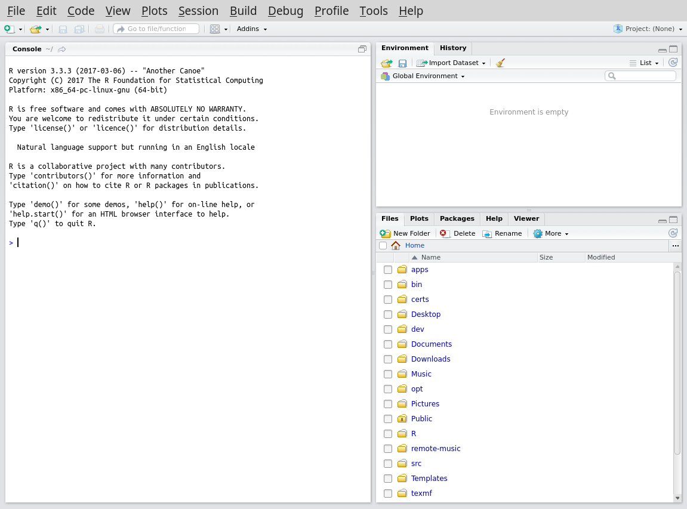

First things first, open up R studio.

You should see something like the above; a window with the panes - a Console with some introductory text and a blue > prompt, an empty Enviroment and a Files browser showing the contents of the current directory.
Lets play with some very basic commands.
You need to select the Console window and type after the > prompt (and type Enter after each one to execute the command).
In the rest of the text we will use the following conventions (which echo what you will see in your Command window):
Commands will be shown with a preceding '>' as a guide to what you should enter - you must not type it in as part of the command.
The output expected from R will be preceded by a number in square brackets (for example [1])
Basic maths
R can be used as a simple calculator.
As in many programming languages, multiply is * and divide is /.
Addition
> 1 + 2
[1] 3
Division
> 1 / 2
>[1] 0.5
Multiplication
> 2 * 2
[1] 4
Keeping the results of calculations
If this was the only thing R could do it would be pretty useless.
It is very useful to to store the results of a command with a name so we can use it again later.
In programming this is called assigning a value in a variable.
In R there are two commands to assign a value to a variable - <- and =.
Try the following:
my_result <- 7 + 3
Note how there is now no output with square brackets.
To see the value in the variable x use the following command:
print(my_result)
You will also see that my_result has been added to the Values section of the Environment pane (top right) in R Studio.
Getting help
We have just used our first R function - print.
Functions take input surrounded by brackets.
To get more information on how to use a function you can use ?, for example:
?print
You will then see more information in the Help tab on the function in the bottom right pane in R Studio. This is a tab in the pane which initially held the Files - this can easily be recovered from tab menu there.